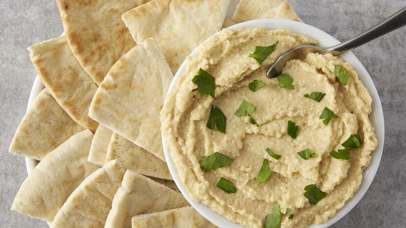

Hummus
Ingredientes:
- 1 a 2 limões espremidos
- 1/3 de xícara de tahini
- 1 a 2 dentes de alho
- Sal a gosto
- 3 colheres de sopa de azeite
- 2 xícara de grão de bico cozido
- 1/4 de xícara de água
Modo de Preparo:
Coloque todos os ingredientes líquidos em um processor, em seguida, os sólidos. Bata até obter uma consistência pastosa. Caso o hummus esteja muito grosso, adicione a água e continue batendo. Coloque em um recipiente e regue com azeite.
Torta de Abobrinha
Ingredientes:
- 1 abobrinha cortada em cubos
- 1 cebola picada
- 1 tomate sem sementes picado
- Salsinha picada
- 1 xícara de queijo ralado de sua preferência
- Sal e azeite a gosto
- 3 ovos batidos
- 1/4 de farinha de trigo
- 1 colher de sopa de fermento biológico em pó
Modo de Preparo:
Misture a abobrinha, a salsinha, a cebola, o tomate e o queijo em uma tijela, adicione sal e regue com um pouco de azeite. Em seguida, coloque o queijo, a farinha, o fermento e o ovo batido e misture bem. Tranfira o conteúdo para uma assadeira e leve ao forno pré-aquecido a 200 graus por aproximadamente 20 minutos.